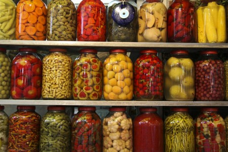

Абрикосы в сахареАбрикосы вымыть, удалить косточки и проварить в сиропе на слабом огне 30 минут. Оставить на сутки. На следующий день варить на слабом огне, пока абрикосы не станут прозрачными. После этого плоды вынимают из сиропа, раскладывают на плоской тарелке или блюде и дают подсохнуть в нежаркой духовке. Когда их поверхность будет хорошо подсушена, уложить их в банки, пересыпая слегка сахарным песком или сахарной пудрой.
Для сиропа: на 0,5 л воды – 1,25 кг сахара.
Варенье из абрикосовКрупные, спелые абрикосы вымыть, разрезать, удалить косточки. Сварить сироп. Выложить абрикосы в таз для варенья, залить сиропом и оставить на 12 часов. Перед следующей варкой сироп слить, довести до кипения и в течение 5 минут проварить его на слабом огне, снова залить абрикосы и оставить еще на 12 часов. На третий раз доварить варенье до готовности. Половинки абрикоса становятся прозрачными, как янтарь.
На 1 кг абрикосов – 1 кг сахара, 0,5 л воды.
Варенье из целых абрикосовНедозрелые плоды или дички промыть, наколоть, бланшировать 3 минуты в кипятке, затем 3 минуты студить в холодной воде. Воде дать стечь. Приготовить сироп и залить кипящим абрикосы. Довести до кипения на слабом огне и проварить 3–5 минут. Снять с огня и оставить на 6–8 часов. Эту операцию повторить 3 раза. В последний раз варить до готовности с добавлением в конце варки лимонной кислоты.
Ha 1 кг абрикосов – 1,3–1,5 кг сахара, 300 г воды, 2–3 г лимонной кислоты.
Варенье из абрикосов с косточкамиАбрикосы промыть, сделать на них небольшие надрезы и выдавить косточки. Извлечь ядра и вставить их в абрикосы. Сварить сироп. Выложить абрикосы в кастрюлю, залить горячим сиропом и оставить на 10–12 часов. Затем сироп слить, прокипятить 5 минут, снова залить абрикосы и оставить на сутки. В третий раз варить варенье до готовности. Абрикосы и сироп должны стать прозрачными.
На 1 кг абрикосов – 350–400 г сахара (1,5–2 тонких стакана), 0,5 л воды.
Абрикосы в яблочном пюреЯблоки очистить, удалить сердцевину, нарезать дольками и разварить в кастрюле под крышкой с тремя ложками воды. В горячем виде яблоки протереть через сито, добавить сахар, хорошенько размешать и на слабом огне довести до кипения. Абрикосы вымыть, разрезать на половинки, удалить косточки и бланшировать в кипящей воде 2 минуты, затем быстро остудить и откинуть на дуршлаг для стекания воды. Абрикосы уложить в подготовленные банки, осторожно залить кипящим пюре, накрыть крышками и стерилизовать: пол-литровые банки – 10 минут, литровые банки – 15 минут. Закатать.
На 1 кг абрикосов – 1 кг кислых яблок, 200 г сахара (1 тонкий стакан), гвоздика по вкусу.
Пюре из абрикосовСпелые абрикосы вымыть, разрезать на половинки и удалить косточки. Затем абрикосы выложить в эмалированную кастрюлю, влить 1 стакан воды, прикрыть крышкой и на слабом огне довести до кипения. Проварить абрикосы 8–10 минут, протереть в горячем виде через сито и выложить в таз для варенья или в кастрюльку. В протертые абрикосы всыпать сахар, хорошенько перемешать, поставить на слабый огонь. Помешивая, довести до кипения и проварить не больше 10 минут. Затем разлить по банкам и стерилизовать: пол-литровые банки – 10 минут, литровые – 15 минут.
Ha 1 кг абрикосов – 250 г сахара, 250 г воды.
Желе из абрикосовТвердые зрелые абрикосы (можно приготовить желе из недозрелых абрикосов, но в этом случае сахара идет больше) бланшировать 3 минуты в кипятке, затем снять кожицу, разделить на половинки и удалить косточки. Абрикосы выложить в кастрюлю, залить небольшим количеством воды и варить до размягчения. В горячем виде протереть через густое сито, добавить сахар и нагревать, непрерывно помешивая, до полнейшего растворения сахара. Затем на слабом огне довести до кипения и уварить примерно на половину, снимая пену. Желе готово, если капля, опущенная в холодную воду, превращается в шарик. Готовое желе в горячем виде разлить по прогретым простерилизованным банкам, закатать и пастеризовать при температуре 90 °C: пол-литровые – 8 минут, литровые – 12 минут. Банки охладить в естественном состоянии, не переворачивая.
Ha 1 л пюре – 650 г сахара (4 граненых стакана).
Повидло из абрикосовДля изготовления повидла годятся мятые и перезрелые плоды. Извлечь косточки, вырезать дефектные части и варить на медленном огне, постоянно помешивая. Незадолго до конца варки всыпать сахар, тщательно размешать. Пюре варить до загустения, пока оно не уварится на одну треть объема. В горячем виде разложить по банкам и укупорить полиэтиленовыми крышками или обвязать пергаментной бумагой.
Ha 1 кг абрикосов – 100 г сахара.
Мармелад из абрикосовСпелые абрикосы вымыть, разрезать на половинки и удалить косточки. Затем абрикосы выложить в эмалированную кастрюлю, влить 1 стакан воды, прикрыть крышкой и на слабом огне довести до кипения. Проварить абрикосы 8–10 минут, протереть в горячем виде через сито и выложить в таз для варенья или в широкую кастрюлю. В протертые абрикосы всыпать сахар, хорошенько перемешать, поставить на огонь. Мармелад следует варить на медленном огне, периодически помешивая деревянной лопаточкой. Твердый мармелад считается готовым, если на дне кастрюли остается след от ложки. Готовый мармелад разложить по банкам, положив сверху на мармелад пергамент, смоченный в спирте, после чего завязать пергаментной бумагой или закрыть полиэтиленовыми крышками. Банки с мармеладом охладить, поставив в теплую воду и доливая холодную. Во время охлаждения банки с мармеладом нельзя двигать.
Ha 1 кг абрикосов – 900 г сахара, 3 г лимонной кислоты, 250 г воды.
Компот из абрикосовСпелые, крупные плоды, с плотной мякотью, вымыть, разрезать, удалить косточки и бланшировать 3 минуты в кипящей воде. Быстро охладить в холодной воде (3 минуты), снять кожицу. Абрикосы уложить в банки и залить слегка остывшим сахарным сиропом. Накрыть крышкой и стерилизовать: пол-литровые банки – 10 минут, литровые – 15 минут. Остудить.
Для сиропа: на 1 л воды – 650 г сахара (4 граненых стакана).
Компот из абрикосов и вишниИз вишни удалить косточки. Абрикосы наколоть с двух сторон булавкой, разрезать на половинки, удалить косточки и бланшировать 3 минуты в кипящей воде, после чего быстро охладить в холодной. В банки уложить, чередуя ряд вишен с двумя рядами абрикосов, и залить слегка остывшим (но все еще достаточно горячим) сахарным сиропом. Банки накрыть крышками и стерилизовать: пол-литровые – 15 минут, литровые – 25 минут. Закатать.
Для сиропа: на 1 л воды – 400 г сахара (2 тонких стакана).
Абрикосовый сок с мякотьюСпелые абрикосы без дефектов вымыть, разрезать на половинки и удалить косточки. Затем абрикосы выложить в эмалированную кастрюлю, влить 1 стакан воды, прикрыть крышкой и на слабом огне довести до кипения. Проварить абрикосы 8–10 минут, протереть в горячем виде через сито, выложить в кастрюлю, добавить сахар, хорошенько перемешать и поставить на слабый огонь. Помешивая, довести до кипения и в горячем виде разлить по простерилизованным банкам. Закатать, перевернуть вверх дном, укутать и оставить до остывания.
На 1 кг абрикосов – 250 г сахара, 250 г воды.
Цукаты из абрикосовСварить обыкновенное абрикосовое варенье без добавления лимонной кислоты. Из горячего варенья вынуть плоды, откинуть на дуршлаг или сито, дать стечь сиропу. Затем разложить абрикосы на решетке или на плоской тарелке и подсушить в слабо нагретой духовке с открытой дверцей. Затем плоды обвалять в сахарной пудре (по желанию можно в половинки цукатов завернуть кусочки грецкого ореха) и досушить до готовности. Хранить в коробках или в стеклянных банках, переложив каждый ряд цукатов пергаментной бумагой.
Сушеные абрикосыСпелые здоровые плоды вымыть, обсушить, разрезать на половинки и удалить косточки. Затем выложить в таз или широкую кастрюлю, засыпать сахаром и оставить на 10–12 часов, после чего довести до кипения. Абрикосы откинуть на дуршлаг, дать стечь сиропу, разложить на противень и сушить в слабо нагретой духовке с открытой дверцей. Подсушенные и остывшие абрикосы разложить по сухим стеклянным банкам и укупорить.
Ha 1 кг абрикосов без косточек – 600–700 г сахара (3–3,5 тонких стакана).